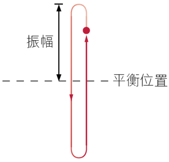
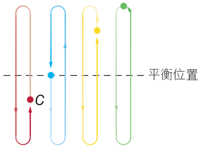
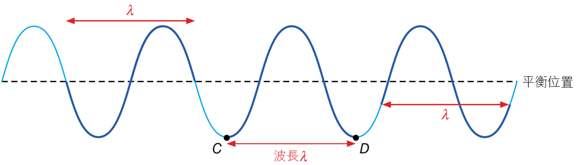

⇩向下滾動以開始⇩
| 振幅 振幅是粒子振動時與平衡位置的最大距離。 |
|||
| 單位：米 (m)
符號：A |
 | ||
| 週期 週期是粒子完成一次完整振動所需的時間。 |
|||
| 單位：秒 (s) 符號：T |
 | ||
| 振幅 頻率是粒子在一秒內振動的次數。 |
|||
| 單位：Hz（即每秒的振動次數） 符號：f |
$$f = { 1 \over T}$$
|
||
| 波長 波長是波形重複的最短距離。 |
||
|  | ||
| 單位：米 (m) 符號：ג |
| 波速率 波速率是波在一秒內行進的距離。 |
|||
| 單位：ms–1 符號：v |
v = fג | ||